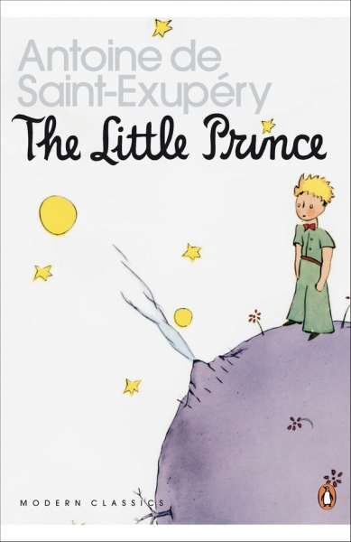
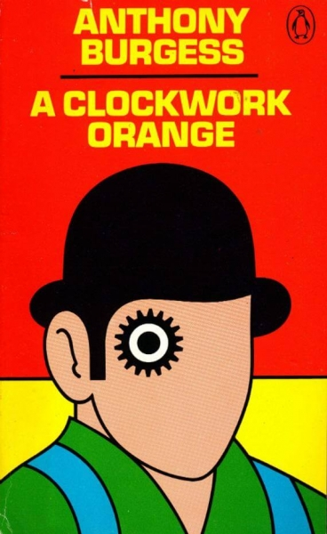
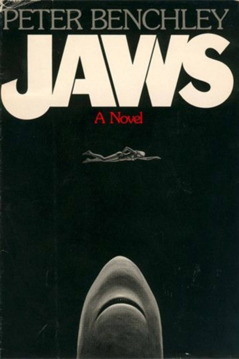
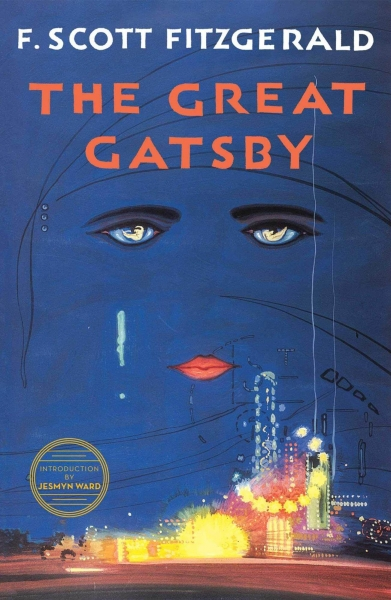

The Little Prince is an honest and beautiful story about loneliness, friendship, sadness, and love. The prince is a small boy from a tiny planet (an asteroid to be precise), who travels the universe, planet-to-planet, seeking wisdom. On his journey, he discovers the unpredictable nature of adults.
Jurassic Park is a 1990 Science fiction novel written by Michael Crichton. A cautionary tale about genetic engineering, it presents the collapse of a zoological park showcasing genetically recreated dinosaurs to illustrate the mathematical concept of chaos theory and its real world implications.
Everything Is Illuminated is the first novel by the American writer Jonathan Safran Foer, published in 2002. It was adapted into a film of the same name starring Elijah Wood and Eugene Hütz in 2005.

A Clockwork Orange is a dystopian satirical black comedy novel by English writer Anthony Burgess, published in 1962. It is set in a near-future society that has a youth subculture of extreme violence.

Jaws is a novel by American writer Peter Benchley, published in 1974. It tells the story of a large great white shark that preys upon a small Long Island resort town and the three men who attempt to kill it.
Psycho is a 1959 horror novel by American writer Robert Bloch. The novel tells the story of Norman Bates, a caretaker at an isolated motel who struggles under his domineering mother and becomes embroiled in a series of murders.

The Great Gatsby is set in the Jazz Age on Long Island, near New York City, the novel depicts first-person narrator Nick Carraway's interactions with mysterious millionaire Jay Gatsby and Gatsby's obsession to reunite with his former lover, Daisy Buchanan.
The Godfather is a crime novel by American author Mario Puzo. Originally published in 1969 by G. P. Putnam's Sons, the novel details the story of a fictional Mafia family in New York City, headed by Vito Corleone, the Godfather.
Poncio, Toby Carl A.
BIT34